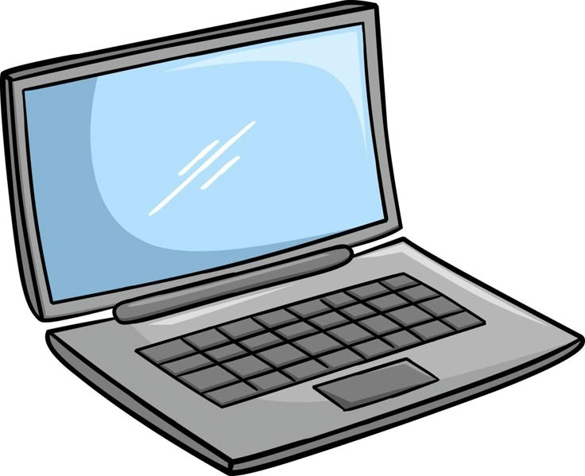
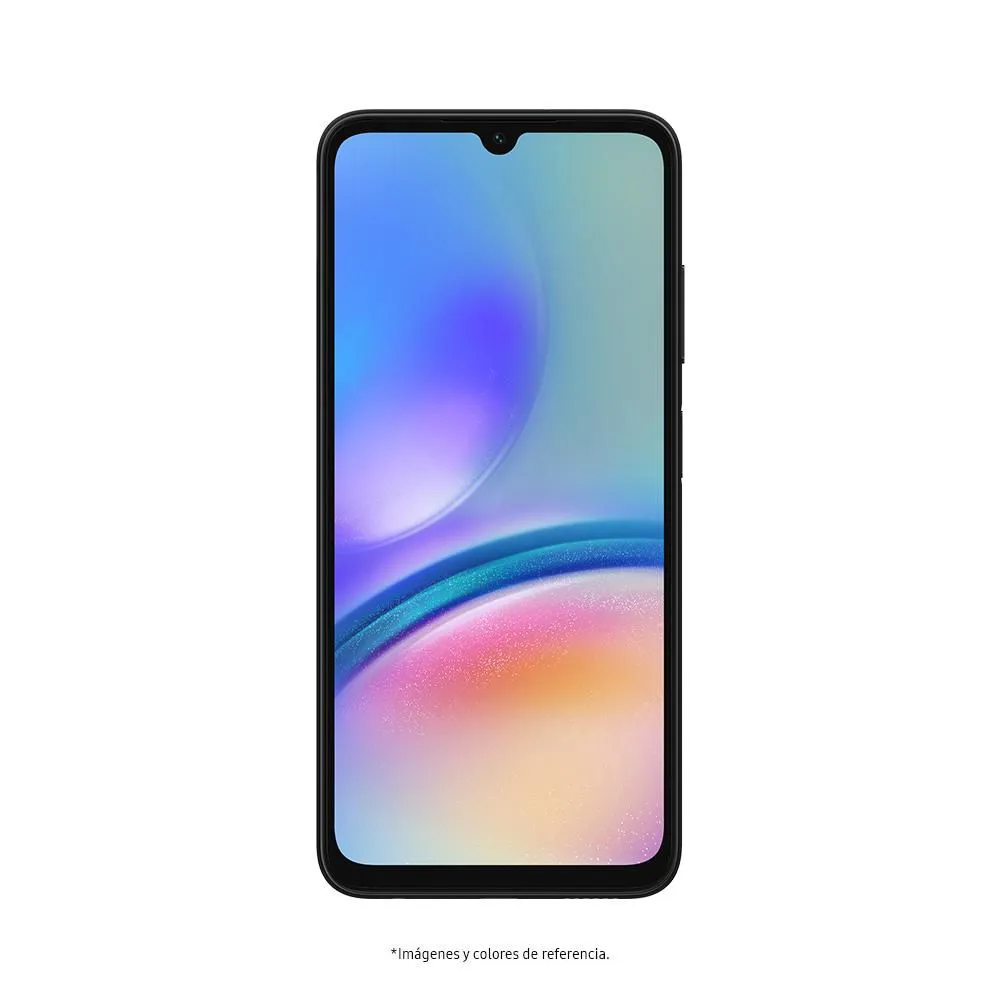
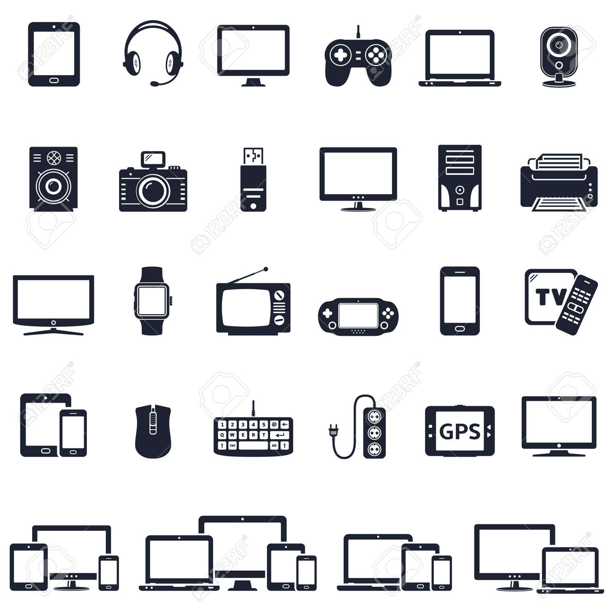

la vida es compleja para algunos pero hoy en dia se crearon herramientas para solucionarla
este es una heramienta que se utliza para muchas cosas como
Entrada de datos: El computador recibe información a través de dispositivos como el teclado, el ratón, el escáner o micrófonos. Procesamiento: La unidad central de procesamiento (CPU) interpreta y ejecuta instrucciones para transformar los datos en información útil. Almacenamiento: Guarda datos de forma temporal (memoria RAM) o permanente (disco duro, SSD, USB), lo que permite su uso y recuperación en cualquier momento. Salida de información: Muestra o entrega los resultados procesados mediante pantallas, impresoras, altavoces, etc. Control: Coordina y dirige todas las operaciones internas para que los dispositivos funcionen correctamente y en sincronía.y>
Educación: Permite el acceso a recursos digitales, clases en línea, programas interactivos y herramientas de aprendizaje personalizadas. Trabajo y oficina: Se usa para redactar documentos, gestionar datos, enviar correos electrónicos, realizar videollamadas, y manejar sistemas administrativos. Entretenimiento: Facilita ver películas, jugar videojuegos, escuchar música, navegar por redes sociales y crear contenido multimedia. Ciencia y tecnología: Esencial para simulaciones, análisis de datos, investigación científica, diseño de modelos y programación de sistemas avanzados. Comunicación: Se usa para enviar mensajes, hacer videollamadas, participar en redes sociales y mantener el contacto global en tiempo real. Comercio: Ayuda en compras en línea, banca digital, administración de inventarios y operaciones financieras. Salud: Se utiliza en hospitales y clínicas para registrar historiales médicos, realizar diagnósticos asistidos por software y operar equipos médicos.
Comunicación: Su función principal sigue siendo permitir la comunicación mediante llamadas, mensajes de texto (SMS) y aplicaciones como WhatsApp, Telegram, etc. Acceso a Internet: Los celulares permiten navegar por páginas web, usar redes sociales, buscar información y descargar aplicaciones a través de conexión Wi-Fi o datos móviles. Multimedia: Capturan fotos y videos con cámaras integradas, reproducen música, películas y otros contenidos audiovisuales de alta calidad. Aplicaciones: Ejecutan miles de apps con funciones diversas como edición de fotos, juegos, mapas, banca móvil, salud, redes sociales, educación, etc. Almacenamiento y organización: Guardan contactos, fotos, archivos y documentos. Además, ofrecen calendarios, recordatorios, alarmas y notas. Geolocalización y navegación: Gracias al GPS, permiten ubicar al usuario en el mapa, dar direcciones, seguir rutas y compartir ubicación en tiempo real. Seguridad y autenticación: Muchos teléfonos modernos incluyen huella digital, reconocimiento facial o patrones para desbloqueo y verificación de identidad.
Educación: Se usa para asistir a clases virtuales, investigar, leer libros digitales, usar calculadoras y aplicaciones educativas. Trabajo y productividad: Ayuda a responder correos, asistir a reuniones en línea, editar documentos, gestionar tareas y trabajar desde cualquier lugar. Entretenimiento: Ofrece acceso a redes sociales, videojuegos, videos en YouTube, películas, series y plataformas de música como Spotify. Fotografía y video: Gracias a las cámaras de alta calidad, se ha convertido en una herramienta para crear contenido profesional o personal. Salud y bienestar: Con apps de ejercicio, meditación, control del sueño y monitoreo del ritmo cardíaco, el celular apoya en el cuidado personal. Compras y pagos: Permite comprar en línea, hacer pagos electrónicos, transferencias bancarias y usar billeteras digitales como Google Pay o Apple Pay. Redes sociales y vida digital: Es fundamental para conectarse con otras personas, compartir experiencias, noticias y seguir tendencias a nivel global.
Dispositivos móviles (tabletas y celulares) Funciones: Comunicación, navegación por internet, reproducción multimedia, juegos, redes sociales, trabajo y estudio. Usos: Llamadas, videollamadas, mensajes, acceso a apps, cámara, entretenimiento.
Monitores y pantallas Funciones: Mostrar visualmente información o imágenes del computador o de otros dispositivos. Usos: Trabajo de oficina, diseño, juegos, educación en línea.
Controles de videojuegos y consolas portátiles Funciones: Interacción con videojuegos. Usos: Entretenimiento, desarrollo de reflejos, relajación
Laptops y computadores de escritorio Funciones: Procesamiento de datos, creación de contenido, programación, navegación, juegos, trabajo. Usos: Educación, trabajo profesional, edición de fotos/videos, desarrollo de software.
Auriculares y micrófonos Funciones: Entrada y salida de audio. Usos: Escuchar música, participar en videollamadas, grabar audio o comunicarse en juegos.
Cámaras y webcams Funciones: Capturar imágenes y video. Usos: Fotografía, videollamadas, grabación de contenido, vigilancia.
Impresoras Funciones: Imprimir documentos o imágenes desde un computador. Usos: Tareas escolares, trabajos de oficina, impresión de fotos o archivos.
Televisores Funciones: Mostrar contenido audiovisual. Usos: Ver películas, noticias, jugar videojuegos, entretenimiento familiar.
Teclado y ratón Funciones: Entrada de datos y control del sistema operativo. Usos: Navegar en el computador, escribir, jugar, diseñar.
Regleta eléctrica Funciones: Distribuir energía a varios aparatos electrónicos. Usos: Conectar varios dispositivos en un mismo lugar (ej. PC, impresora, monitor).
Memoria USB Funciones: Almacenar y transportar archivos. Usos: Guardar documentos, fotos, música, videos o respaldos.
GPS Funciones: Navegación y localización por satélite. Usos: Mapas, rutas, ubicación en tiempo real.
Dispositivos conectados (ecosistema) Funciones: Sincronización de información entre varios dispositivos. Usos: Continuar tareas de un dispositivo a otro, respaldo automático, gestión centralizada.